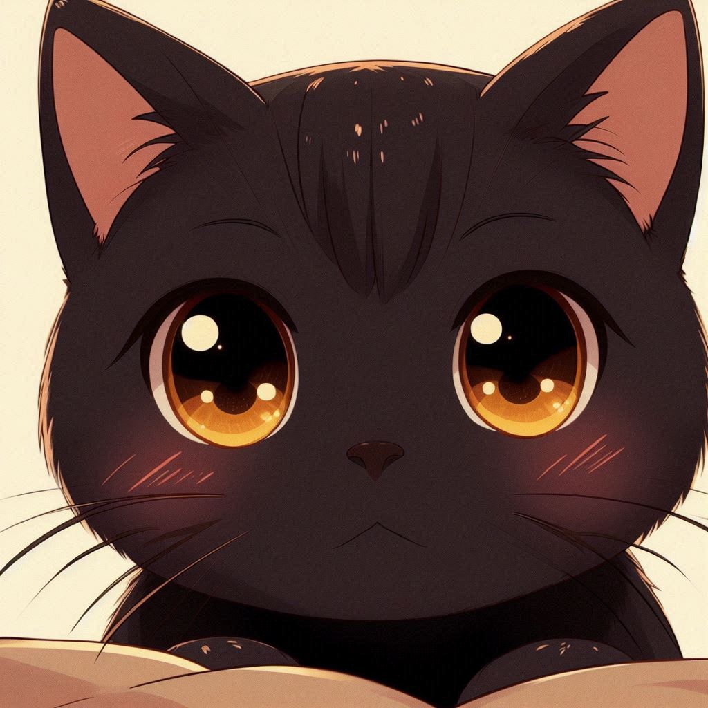

"Una interpretación llena de calidez y tradición. Cada nota celebra la alegría y la emoción de este momento inolvidable."
videoSobre mí
"Soy Angela Jasso, un apasionado violinista de México, dedicado a explorar las infinitas posibilidades de la Milagrosa música del violín."
Mi Viaje Musical
Te invito a conocer más sobre mis interpretaciones.
Interpretación de: “Las Mañanitas”
Un Toque de Magia: “Busca lo más vital”
"Interpretando desde una perspectiva cálida y alegre. Esta versión en violín invita a dejarse llevar por lo simple y maravilloso."
video
El Desafío de Paganini: “Capricho No. 5”
"Conocida como una de las piezas más desafiantes, el Capricho No. 5 es un despliegue de técnica y precisión."
video
Interpretación de: “Las Mañanitas”
"Una interpretación llena de calidez y tradición. Cada nota celebra la alegría y la emoción de este momento inolvidable."
video